Your AI agents won't set
your GPU on fire.
firefighter is a local GPU, CPU and RAM scheduler, job queue and market maker for AI coding agents sharing one computer. One command installs it on Windows, macOS or Linux. After that, every agent session queues its heavy work, sees what the others are doing, and gets out of the way when you need the machine.
irm https://raw.githubusercontent.com/JoshWright22/FIREFIGHTER/main/scripts/install.ps1 | iexcurl -fsSL https://raw.githubusercontent.com/JoshWright22/FIREFIGHTER/main/scripts/install.sh | sh
Turns, not fights
A reserve that follows you
Keyboard, fullscreen, games, Docker, Kubernetes and your own apps all count as your load. A dynamic reserve of CPUs, RAM and VRAM grows within half a second when you need it.
Least-served goes first
Projects that have used the least go first, with a 45-minute cap on any wait. GPU jobs are admitted only when their learned VRAM need fits.
Posted prices, one line
Spot, normal and urgent tiers. Every reply ends with when each tier would start, what it costs, the odds the GPU is busy over the next 2 hours, and a do: that never says "outbid". About 60 tokens.
Skip the line, pay for it
Heavy work an agent starts outside the queue is adopted, put on idle priority, billed 1.5x, and preempted first. Flood limits are on by default.
Polite, then firm
Shrink the job's CPU set, then a cooperative pause, a bounded suspend, and checkpoint-and-requeue. Jobs are killed only when RAM is critical.
Every agent knows
Starts at logon, registers its MCP server with your agent CLIs, and adds the rules to their global instructions automatically.
Dominant Resource Fairness · Tiresias least-attained-service · Karma credits · PerfIso idle-core buffers · Themis leases · lottery & stride scheduling · BOINC idle detection · KAI-Scheduler minimum runtime · PilotFish GPU harvesting. Read the report
Get firefighter on GitHub